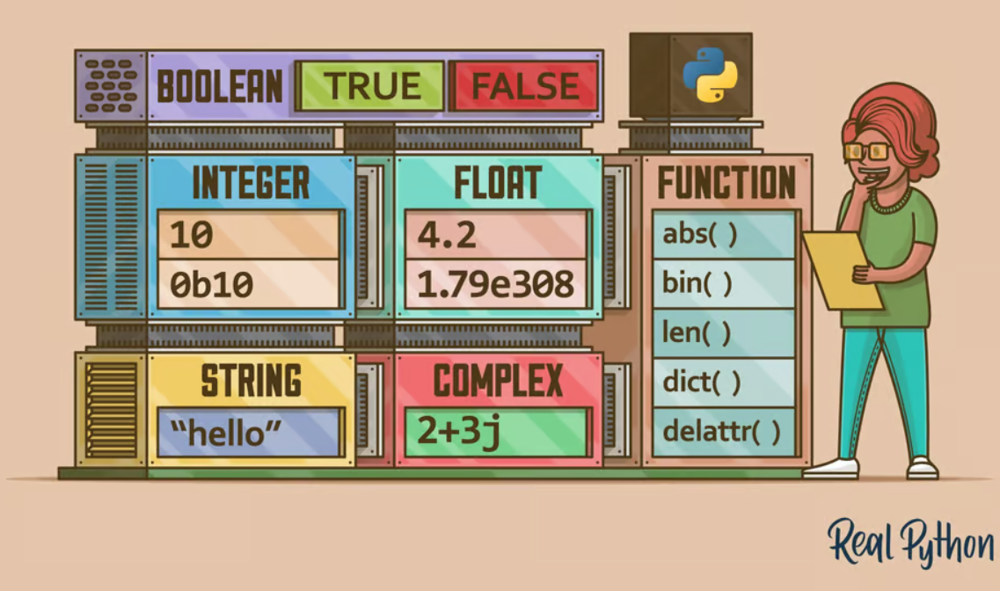

cat("Hallo R Lover!")
#> Hallo R Lover!
Bu yerda ma’lumotlar turi (Data Type) hamda ular bilan R va Python da ishlash haqida o’qigan/o’rgangan/tushunganlarimni qisqacha tushuntirishga harakat qilaman, demak bu kontentni mani konspektim desayam boladi;). Avvalo, bu artikelning tuzilishi, Input(Codeblock), Output(Natija), eslatma va shunga o’hshash narsalar qanday kurinishdaligi haqida qisqacha tushunchadan boshlamoqchiman, yan’i yozilmaning tuzilishi,
Input(Codeblock)- Quyida shunchaki Input deb ketilade va konsolga kiritilgan R yoki Python kodlari nazarda tutiladi, Output(Result)- Quyida shunchaki Output deb ketiladi va kiritlgan kodning konsoldagi natijasi nazarda tutiladi.
Struktur
R va Python uchun kiritilgan kod yonma-yon yoki tabsetlarda ko’rsatilishi mumkin. R-Sourse ochiq ko’k rangda va Python-Sourse sariq rangda ko’rsatiladi. Output natijalarining satrlari #> belgisi bilan boshlanadi. Quyida R va Pythonda oddiy textni ekranga chiqarish kodining natijasi tabset sifadida ko’rsatilgan:
print("Hallo Python Lover!")
#> Hallo Python Lover!Muhim narsalar rang bilan ajratib ko’rsatilgan va mos ravishda belgilangan:
reticulate- paketi (R da malum funksiyalarga ega bo’lgan to’plam yoki biblioteka, Pythonda modul deyiladi), R va Python o’rtasida o’zaro ishlashni taminlaydigan vosita. Bu paket orqali Pythonni R da chaqirish, Python modullarini import qilish va R da Python-dan interaktiv foydalanish imkonini beradi. Buning uchun avval u ishhga tushirilishi kerak ya’ni yuklab olishi kerak. Masalan Pythonda pandas modulidan foydalanish uchun yuklash y’ani import qilisch kerak: mport pandas as pd, keyin esa modul ichidagi funksiyalarni ishlatisch imkoniyati boladi, R da ham shunday, ular Paket engl. Package deyiladi, ulardan foydalanish uchun, avval kerakli paketni yuklash kerak, R da esa masalan retikulate paketi library(retikulate) tarzda yuklanadi yani ishga tushiriladi, undan oldin esa paketni tushirib olish kerak: install.packages("reticulate"). Ko’proq malumotni reticulate saytidan olish mumkin.
Biror bir ifodaning tushunchasi yoki eslatmalar yon tomonda (o’ngda) izoh kabi keltiriladi. Masalan tekst davomida Variable ishlatilsa, u haqdagi ma’lumotni o’ng tomonda keltirilgan izohdan olish mumkin
Variable - o’zgaruvchi bo’lib, bunda har xil ko’rinishdagi qiymatlarga, ma’lumotlarga, data frame yani jadvallarga berilgan nom nazarda tutiladi.
Yuqorida ta’kidlanganidek, biror narsa o’qish va o’rganish jarayonida o’zimga konspekt qilib olaman, shunda tushunishim osonrog’, bu mandagi ko’nikma, lekin hammada har xil. Bu yerda es shu jarayonda o’rgangan va tushunganlarimni baham ko’rmoqchiman va umid qilamanki, bu R yoki Python tillarini manga o’xshab boshidan o’rganmoqchi bo’lhganlar uchun qiziqarli va foydali boladi. Grammatik, imloviy va/yoki orfografik xatolar uchun oldindan uzr so’raladi;). Birinchi navbatda gap nima qadilagi to’g’risida ikki og’iz:
What is it about
Bu konspektda ma’lumotlarning turlari engl. Data Types, ularning nima uchun va qanday farqlanishi undan tashqari R va Pythonda ular bilan ishlash haqida gap boradi. Bunda e’tibor ko’proq muhim bolgan ya’ni kundalik hayotda biz ko’p duch keladigan, ishlatadigan va ko’pincha ular bilan shug’ullanishimiz mumkin bo’lgan ma’lumotlar turlarini yoritishga harakat qilinadi.Birinchi marta o’qib turgan yoki eshitgan kalajakda karak bolmasligi mumkin bolgan m’lumot turlariga fokus qaratilmaydi, masalan murakkab ma’lumot turlari (Complex Data Types) yoki shunga o’xshagan R-dagi Raw Data Types, Python-dagi Bytes Data Types. Aytilgandek fokus kerakli deb hisoblangan ma’lumot turlariga qaratiladi.
Avvaliga shuni oydinlashtirmoqchimanki,
What the data types are
Har xil turdagi ma’lumotlar o’rtasida qanday farqlar mavjudligi va nima uchun ma’lumotlar turlari umuman farqlanishi haqida gap ketganda hayolimizga ma’lumotlar bilan ishlashda kundalik hayotda eng ko’p duch keladigan raqamlar va matnlar o’rtasidagi farq kelishi mumkin. Biz ma’lumotlar bilan ishlashni davom ettirmoqchi bo’lganda va ular ustida qandaydir amallarni bajarmoqchi, hisob-kitoblarni amalga oshirmoqchi bo’lganda, ular o’rtasidagi farqning ham muhimligi kelib chiqadi. Bunda ma’lumotlar o’zgaruvchilarda saqlanadi, shunda dastur ushbu ma’lumotlarga murojaat qilishi mumkin. Demak kompyuter ham birinchi navbatda tushunishi kerak, masalan ma’lumot raqammi yoki matnmi, ayniqsa u bu ma’lumot ustida qandaydir amal bajarishi kerak bolsa. Bu o’zgaruvchilarni biz R yoki Python-da objectlar deb atashimiz mumkin. Eslab qolish kerak bolgan muhim narsa shuki, aynan ushbu objektlarning turi ma’lumotlar qay tarzda saqlanishi va taqdim etilishini belgilaydi. Masalan, Integer turi butun son 42 ni misol uchun var_son sifatida saqlashga imkon beradi, va bu raqam var_son objekti bilan ifodalanadi. Ko’p dasturlash tillaridan farqli ravishda, Python va R o’zgaruvchi yaratislishida turni ko’rsatishni yoki aniq tur bilan belgilashni talab qilmaydi. Ob’ektni yaratishda ular avtomatik ravishda uning turini aniqlaydi. Shuning uchun ular OOP(Object Oriented Programming)-Dasturlash tillariga kiradilar.
Object - R yoki Python-da biz ma’lumotlarni object sifatida saqlashimiz mumkin, masalan bir yoki bir necha qiymatlarni, jadvallarni, modellarni, biror bir amalning natijalarini, funksiyalar etc.
Umid qilamanki, ma’lumotlar turi nima ekanligi haqida kengroq tasavvurga ega boldik . Quyida R va Python-da ko’p ishlatiladigan asosiy ma’lumot turlarini ko’rib chiqamiz:
Frequently used basic data types in Python and R
Yuqorida aytilganidek, ma’lumotlar R va Python-da ob’ektlar sifatida saqlanadi. Har bir ob’ekt shu nomga qiymat berish orqali nom oladi. Masalan, 42 raqamini var_numb nomi bilan yoki “world” so’zini var_txt nomi bilan saqlashim mumkin. R yoki Python masalan 42 ni son ya’ni raqam sifatida qabul qiladi. Ammo bu raqamni saqlashda Python va R boshqacha yo’l tutadi, R uni numeric ya’ni o’nlink son sifatida saqlaydi. Agar raqam butun son sifatida bo’lishi kerak bolsa, R ni bu sonni butun son sifatida saqlashiga majburlash kerak boladi. Python buning aksini qiladi, bu raqamni int sifatida saqlaydi, agar men uni o’nlik son (engl. float) sifatida xohlasam, turni belgilashim yoki shu turga aylantirishim kerak.
Bu erda R va Python-da umumiy asosiy ma’lumotlar turlarining umumiy ko’rinishi (Wouter van Atteveldt 2022 ga asoslangan) qisqcha jadval sifatida tasvirlangan:
| Example | Example | Description | ||
|---|---|---|---|---|
| integer | 42L | int | 42 | Butun Sonlar |
| double | 42.33 | float | 42.33 | Real/O’nlik sonlar |
| character | “Text” | str | “Text” | Satrlar, Matnlar |
| logical | TRUE, FALSE | bool | True, False | Mantiqiy qiymatlar |
R dasturida integer va double ko’pincha numeric sifatida umumlashtirilib tasvirlanadi. Jadvaldan kelib chiqb aytish mumkinki, bizga R va Pythond-da eng kup kerak boladigan va biz ular bilan eng kup ishlaydigan 3 ta asosiy ma’lumotlar turi bor. Bular: numeric - ya’ni butun (integer) va o’nlik (float) sonlaridan tashkil topgan raqamli ma’lumot turlari, logical - ya’ni mantiqiy ma’lumot turlari va textual - ya’ni matnli (strings) malumot turlaridan tashkil topgan.
Endi alohida turlarni ko’rib chiqamiz.
integer/int
Integer - butun sonni ifodalaydi masalan, 7, -7. R da orqasida L qoyilgan raqamlar butun son sifatida ifodalanadi. Nima uchun “L” turishi kerakligini man ham aniq bilmayman;). Ma’lumki R bu C dasturlash tiliga asoslanib yaratilgan dastur. C dasturlash tilida L long integer ma’nosini bergani uchun, R-da ham shunchaki o’zlashtirib olingan bolsa kerak. Python-da butun sonlar odatdagidek integer sifatida saqlanadi.
ri1 <- 11L
ri2 <- -12L
ri3 <- 13.0
ri4 <- "123"
print(class(ri1))
#> [1] "integer"
print(class(ri2))
#> [1] "integer"
print(class(ri3))
#> [1] "numeric"
print(class(ri4))
#> [1] "character"pi1 = 11
pi2 = -12
pi3 = 13.0
pi4 = "123"
print(type(pi1))
#> <class 'int'>
print(type(pi2))
#> <class 'int'>
print(type(pi3))
#> <class 'float'>
print(type(pi4))
#> <class 'str'>R
Python
Ob’ektning qaysi turiga ega ekanligini bilish yoki ko’rsatish uchun R-da class() va Pythonda type() funksiyasi mavjud. R dasturida obyektlar <- va Python-da = bilan biriktiriladi. Umuman olganda, R = bilan ham ishlaydi, lekin strelka keng tarqalgan, va R-da strelka orqali biriktirish tavsiosa qilinadi.
More about assignment in R:
<- or = ?
R-da ob’ektlarni <- bilan belgilash odatiy hol, Pythonda esa = bilan biriktiriladi. Umuman olganda, R ham teng belgisi bilan ishlaydi. Lekin strelkani ishlatish afzalroq va hatodan holiroq boladi. Tenglik belgisi biror bir funksiya ichida biriktirish uchun ishlatiladi. Misol tariqasida kichkina demonstartsiya:
Bu yerda man 1 dan 15 gacha sonlarga ega bolgan vektorni vec variabliga biriktiraman va vektor (1 dan 15 gacha sonlar) yigindisini hisoblaayman:
sum(vec = 1:15)#> [1] 120Agar man vec ob’ektini yana chaqirsam hatolik yuz beradi, chunki bu objekt faqat funksiya ichida mavjud :
print(vec)#> Error in eval(expr, envir, enclos): Objekt 'vec' nicht gefundenEndi shu narsani <- bilan qilib koraman:
sum(vec <- 1:15)
#> [1] 120
print(vec)
#> [1] 1 2 3 4 5 6 7 8 9 10 11 12 13 14 15Shuning uchun biriktirishda kopincha strelka tavsiya qilinadi va ishlatiladi. Koproq ma’lumotlarni buy erdan: Style guide von Hadley Wickham va bu yerdan: Google’s R Style Guide olish mumkin
\(~\) – \(~\) Check for integer
R-da is.integer() yoki inherits(object, "type") unksiyasidan foydalanib ob’ekt turini tekshirishingiz mumkin.
R
# Check in R if a number is integer
is.integer(ri1) # Is 11L integer?
#> [1] TRUE
inherits(ri2, "integer") # Is -12 integer?
#> [1] TRUE
is.integer(ri3) # Is 13.0 integer?
#> [1] FALSE
is.integer(ri4) # Is "123" integer?
#> [1] FALSE
inherits(ri4, "character") # Is "123"character?
#> [1] TRUE– Convert to integer in R
Aytilganidek, sonlarni orqasida L bolmasa, R bu objektni numeric, ya’ni o’nlik son yoki float (yuqoridagi misoldagi ri3 ob’ektiga qarang). Men R buyurishim kerakki, u sonni butun son sifatida saqlasin. Buning uchun as.integer() funksiyasidan foydalanishim mumkin.
R
show the code
# Making R treat the object as an integer
print(class(ri3)) # Type of 13.0
print(class(ri4)) # Type of "123"
print(class(as.integer(ri3))) # Forsing 13.0 to integer
print(class(as.integer(ri3))) # Forsing "123" to integer
print(class(FALSE)) # Type of FALSE
print(class(TRUE)) # Type of True
print(as.integer(FALSE)) # FALSE as Integer
print(as.integer(TRUE)) # TRUE as Integer#> [1] "numeric"
#> [1] "character"
#> [1] "integer"
#> [1] "integer"
#> [1] "logical"
#> [1] "logical"
#> [1] 0
#> [1] 1 \(~\) – \(~\) Check for int
Python-da tekshirishning bir necha yo’llari mavjud: isinstance(ob'ekt, turi) funksiyasi orqali huddi, R-dagi inherits(ob'ekt, ""turi") kabi yoki ob’ekt turini ma’lumot turi bilan tenglashtirib ham tekshirish mumkin. , masalan, type(object) ==/is int(). Shuningdek, is_integer() funksiyasi ham mavjud. Bu funksiya float-o’nlik nnni int-butun songa tekshirishda ishlaydi, boshqa turlarida ishlamaydi. Boshqa turlari uchun manimcha sumpy moduli kerak. Uni ishlatib kurmadim, chunki yuqorida keltirilgan funksiyalarni uzi ham yetadi, boshqacha aytganda Rimga olib boradigan boshqa yo’llar ham bor.
Python
# Check in Python if a number is integer
isinstance(pi1, int) # Is 11 integer?
#> True
type(pi2) == int # Is -12 integer?
#> True
isinstance(pi3, int) # Is 13.0 integer?
#> False
type(pi4) is int # Is '123' integer?
#> False– Convert to int in Python
Python raqamlarni butun sonlar sifatida saqlaydi. Agar men uni float ya’ni o’nlik son sifatida xohlasam, men float turiga o’tkazishim kerak. Agar menda matn(matn sifatida saqlangan sonlar), Float yoki Logical kabi turdagi ma’lumotlarim bo’lsa, men ob’ektni int() funksiyasiga o’tkazish orqali uni Python-da Integerga aylantira olaman.
Python
show the code
# Making Python treat the object as an integer
print(type(pi3)) # Type of 13.0
print(type(pi4)) # Type of "123"
print(type(int(pi3))) # Forsing 13.0 to integer
print(type(int(pi3))) # Forsing "123" to integer
print(type(False)) # Type of FALSE
print(type(True)) # Type of True
print(int(False)) # FALSE as Integer
print(int(True)) # TRUE as Integer#> <class 'float'>
#> <class 'str'>
#> <class 'int'>
#> <class 'int'>
#> <class 'bool'>
#> <class 'bool'>
#> 0
#> 1numeric/float
Float bu aniqligi uncha katta bo’lmagan suzuvchi nuqtali sonlar, Floating point numbers, Python-da float sifatida ifodalanadi. R odatda (orqasiga L harfi quo’yilmagan) sonlarni float () sifatida saqlaydi. Umuman olganda R sonlarni numeric sifatida ifodalaydi. Ular integer yoki float bo’lishi mumkin. Misol uchun R 12 sonini float, ya’ni 12.0 sifatida saqlaydi, class() funksiyasi bilan u turni numeric sifatida ifodalaydi. R-da ma’lumot turni tekshirish uchun ishlatilishi mumkin bo’lgan yana bir funksiya ham mavjud: typeof(). Bu funksiya orqali 12 sonini double sifatida kursatadi, ehtimol bu C dasturlash tilidan. O’ylaymanki, quyidagi misol nimani nazarda tutayotganimni aniqroq qiladi;).
show the code
#> [1] "numeric"
#> [1] "double"
#> [1] "integer"
#> [1] "integer"
#> [1] "numeric"
#> [1] "double"– Check numeric/float
Bu yerda ham yuqorida Integer uchun keltirilgan funksiyalardan foydalanish mumkin, R-da is.-dan keyin integerni o’rniga numeric yoku double qoyiladi: is.numeric(*obj*) yoki is.double(*obj*) yoki inherits(*obj*, "numeric"). Python-da ham yuqoridagi integer uchun qollangan funksiyadan foydalanish mumkin: type(*obj*), yoki mantiqiy taqqoslash orqali: type(*obj*) is float yoki type(*obj*) == float yoki isinstance(*obj*, float).
rf1 <- 3.14
rf2 <- 17
rf3 <- 20L
print(class(rf2)) # class()-Type of 17
#> [1] "numeric"
print(class(rf3)) # class()-Type of 20L
#> [1] "integer"
print(typeof(rf2)) # typeof()-Type of 17
#> [1] "double"
print(typeof(rf3)) # typeof()-Type of 20L
#> [1] "integer"
is.numeric(rf1) # Is 3.14 numeric?
#> [1] TRUE
is.double(rf2) # Is 17 double?
#> [1] TRUE
is.numeric(rf3) # Is 20L numeric?
#> [1] TRUE
is.integer(rf3) # Is 20L integer?
#> [1] TRUEpf1 = 3.14
pf2 = 17
pf3 = 20
print(type(pf1)) # Type of 3.14
#> <class 'float'>
print(type(pf2)) # Type of 17
#> <class 'int'>
print(type(pf3)) # Type of 20
#> <class 'int'>
isinstance(pf1, float)# Is 3.14 float?
#> True
isinstance(pf1, int) # Is 3.14 int?
#> False
type(pf2) is float # Is 17 float?
#> False
type(pf3) == float # Is 20 float?
#> False
isinstance(pf2, float)# Is 17 float?
#> FalseR
Python
– Convert to numeric/float
O’nlik sonlar, ya’ni R-da numeric yoki float hosil qilish uchun yuqoridagi as. funksiyani bu yerda ham qollaymiz, buning uchun funksiyani shunday yozamiz: as.numeric(*obj*) oder as.double(*obj*).
R
show the code
#> [1] "numeric"
#> [1] "integer"
#> [1] "numeric"
#> [1] "numeric"
#> [1] 0
#> [1] 1Pythonda buni float(*obj*) funksiyasi yordamida amalga oshirishim mumkin.
Python
show the code
#> <class 'int'>
#> <class 'int'>
#> <class 'float'>
#> <class 'float'>
#> 0.0
#> 1.0character/str
Nomidan ko’rinib turibdiki, bunday ma’lumotlar belgilar, harflarni, satr va matnlarni o’z ichiga olgan ma’lumot turlaridir. R-da ular character va Python-da str sifatida tavsiflanadi. Amalda, matnli ma’lumotlar raqamli ma’lumotlar ya’ni sonlar kabi ko’p qo’llaniladigan ma’lumot turlaridandir. Masalan, tahlil qilinadigan ma’lumotlar to’plamida kategorik o’zgaruvchilar misol uchun “erkak’ yoki”ayol” bo’lishi mumkin va hokozo
Wie der Name schon sagt, solche Daten sind Strings, die Zeichen, Buchstaben enthalten. In R werden sie als character und in Python als str charakteresiert. Mit Strings hat man in der Praxis auch wie mit numerischen Daten häufig zu tun. Beispielweise können im zu analysierenden Datensatz auch kategoriale Variablen: “männlich”, “weiblich” vorhanden sein usw.
Satrlar yoki matn ko’rinishidagi ma’lumotlar R va Python-da qo’sh apostrof ichida 'matn' yoki qo’shtirnoq ichida "matn" ko’rsatilishi mumkin. Satr uzunligi funksiyasi R uchun: nchar() va Python len() uchun. R-da stringr paketidan str_lenght("matn") funksiyasini ham ishlatisch mumkin.
# Examples for Characters
rt1 <- "123"
rt2 <- "Hello"
rt3 <- "World"
glue::glue("Class of rt1: {class(rt1)}")
# Adding Strings
glue::glue("glue() funksiyasi orqali: {rt2} {rt3}")
paste("paste() funksiyasi orqali:", rt2, rt3, sep = " ")
# Compare Strings
rt2 == "Hello"
rt2 == "HELLO"
rt1 == 123
# Length of String
glue("\"123\" satrining uzunligi: {nchar(rt1)}")
glue("\"Hello\" satrining uzunligi: {nchar(rt2)}")
length(rt1)#> Class of rt1: character
#> glue() funksiyasi orqali: Hello World
#> [1] "paste() funksiyasi orqali: Hello World"
#> [1] TRUE
#> [1] FALSE
#> [1] TRUE
#> "123" satrining uzunligi: 3
#> "Hello" satrining uzunligi: 5
#> [1] 1Matnlarni bir-biriga qo’shish yoki matnlarni sonla bilan kopaytirish R uchun qiyinchilik tugdiradi
More about string operations in R
Agar biz ikkita matnni birga qo’shmoqchi bo’lsak yoki satr yoki matnni raqamga ko’paytirmoqchi bo’lsak, R hatolik qaytaradi. Ehtimol, bunga imkon beradigan ba’zi paketlar bordir, qarab/izlab korish kerak. Shunday qilib, Python-da ikkita matnni bir biriga qoshish yoki matnni songa kopaytirish ishlagani kabi, R da bu ishlamaydi. glue paketidagi glue(*obj*) funksiyasi yoki paste funksiyasi orqali matnlarni bir biriga qoshib korsatish mumkin. Bu funksiya stringr paketida ham mavjud va uni quyidagicha ishlatish mumkin: stringr::str_glue(). glue("The value of text is {text}) funksiyasi Python-dagi print(f"The value of text is {text}") funksiyaga o’xshaydi.
# R engine
# Satrlarni bir biriga qo'shish yoki ularni songa ko'paytirish
# Ishlamaydi!
satr1 <- "Assalomu"
satr2 <- "Alaykum"
satr1 + satr2
#> Error in satr1 + satr2: nicht-numerisches Argument für binären Operator
satr1 * 3
#> Error in satr1 * 3: nicht-numerisches Argument für binären Operator# Python engine
# Examples for Characters
pt1 = "123"
pt2 = "Hello"
pt3 = "world"
print(f"Type of pt1: {type(pt1)}")
# Adding Strings / matnlarni qoshish
print(pt2 + " " + pt3) # or
print(f"{pt2} {pt3}")
# Multiply a string by 3 / matnlarni songa kopaytirish
pt3*3
# Compare
pt2 == "Hello"
pt2 == "HELLO"
pt1 == 123
# Length of String
print(f"Länge von \"123\": {len(pt1)}")
print(f"Länge von \"Hallo\": {len(pt2)}")#> Type of pt1: <class 'str'>
#> Hello world
#> Hello world
#> 'worldworldworld'
#> True
#> False
#> False
#> Länge von "123": 3
#> Länge von "Hallo": 5Strings - bu keng mavzu. Bu erda faqat ma’lumotlar turi bilan bog’liq tomonlari qaraldi. Balki alohida content ham bo’lar .
logical/bool
Mantiqiy turdagi ob’ektlar TRUE/FALSE yoki 1/0 qiymatlarini olishi mumkin. Bular R da logical va Pythonda bool sifatida saqlanadi. Ofodalash tarsi ham R va Python-da farq qiladi: R-da ular katta harflarda yoziladi: TRUE/FALSE, Python-da esa birinchisi katta va qolganlari kichik harflarda boladi:True/False.
# R engine
rt <- TRUE
rf <- FALSE
class(rt) # Type of TRUE
#> [1] "logical"
class(rf) # Type of FALSE
#> [1] "logical"
is.logical(rt) # Is TRUE logical
#> [1] TRUE
as.character(rt) # TRUE as character
#> [1] "TRUE"
as.character(rf) # FALSE as character
#> [1] "FALSE"
as.integer(rt) # TRUE as integer
#> [1] 1
as.integer(rf) # FALSE as integer
#> [1] 0
rt & rf # rt AND rf
#> [1] FALSE
rt | rf # rt OR rf
#> [1] TRUE
!rt # Is not TRUE
#> [1] FALSE# Python engine
pt = True
pf = False
type(pt) # Type of True
#> <class 'bool'>
type(pf) # Type of False
#> <class 'bool'>
type(pt) is bool # Is bool
#> True
str(pt) # True as String
#> 'True'
str(pf) # False as String
#> 'False'
int(pt) # True as Integer
#> 1
int(pf) # False as Integer
#> 0
pt and pf # pt AND pf
#> False
pt or pf # pt OR pf
#> True
not pt # Is not True
#> FalseR
Python
Kimgadir qayerdadir qaysidir manoda qanchadir yordami tegkan bo’lsa, bundan faqat xursand bolaman. Keyingi mavzu ma’lumotlar tuzilmasi haqida bo’ladi.
References
Aphalo, Pedro J. 2020. Learn R As a Language. CRC Press.
Aust, Holger. Mar 2020. “Datentypen in R – Einfach erklärt.” https://databraineo.com/ki-training-resources/r-programmierung/datentypen-in-r-einfach-erklaert/, [Accessed on 2022-12-11].
Boyan Angelov, Rick J. Scavetta. 2021. Python and R for the Modern Data Scientist. O’Reilly Media, Inc.
Dimitrios Xanthidis, Ourania K. Xanthidou, Christos Manolas. 2022. Handbook of Computer Programming with Python. Chapman; Hall/CRC.
Srivishnumohan, Ahilan. Jun 2020. “Bilingual Data Scientist: Python to R (Part 1).” https://towardsdatascience.com/bilingual-data-scientist-python-to-r-part-1-70438fcdc155, [Accessed on 2022-12-16].
WANG, Mena Ning. Dec 2021. “R & Python Basics 1: Data Type.” https://rpubs.com/MenaWANG/RnPython_DataType, [Accessed on 2022-12-01].
Wouter van Atteveldt, Carlos Arcila Calderon, Damian Trilling. 2022. Computational Analysis of Communication. Wiley-Blackwell.